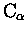

There is something inherrently wrong with the way STAMP assigns
equivalences within multiple alignments. It considers an average set of

coordinates and uses an average set of probabilities to derive
equivalences when more than two structures are involved, and as a
consequence, it appears to go wrong (sometimes only) during this process.
Usually this is only when very distantly related proteins are being
considered. A fix to this problem is to consider each pair of structures
within the alignment separately, and to re-calculate the raw
Rossmann and Argos probabilities. One need then define positions as
structurally equivalent when all pairs of structures have a
Pij value larger than a cutoff at a particular residue position.
For example, for ten structures, there are (
 pairs.
For a position to be structurally equivalent across all members of the
family, Pij should be
pairs.
For a position to be structurally equivalent across all members of the
family, Pij should be  for all 45 pairs.
for all 45 pairs.
POSTSTAMP does just this. It adds two new STAMP format fields to a STAMP
alignment file: one tells
whether the above is true (1) or false (0) for each position (i.e. is
each position structurally equivalent across all members of the family);
the second tells how many pairwise comparison have Pij greater than
or equal to the cutoff (e.g. 0.5).
For example,
poststamp -f globin.5 -min 0.5
Creates a file globin.5.post, containing the above data for a Pij
value of 0.5.